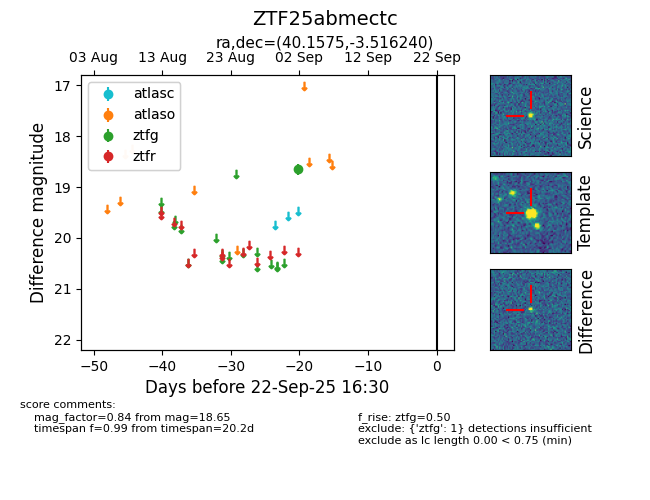

FINK: ZTF25abmectc
Lasair: ZTF25abmectc
ALeRCE: ZTF25abmectc
ZTF25abmectc (ztf,fink)
equatorial (ra, dec) = (40.1575,-3.51624)
galactic (l, b) = (175.5418,-54.82041)

last ztfg=18.65
1 ztfg detections